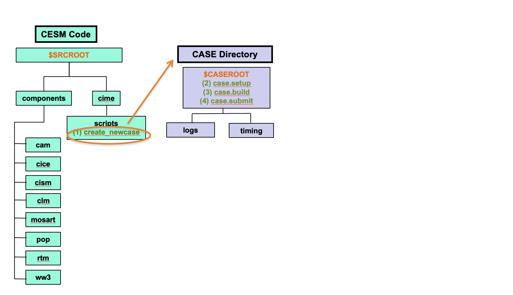
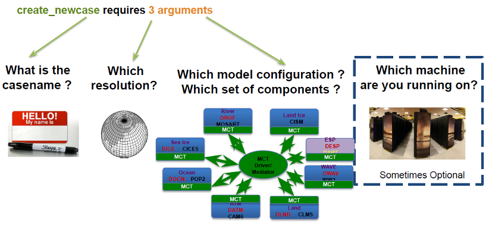
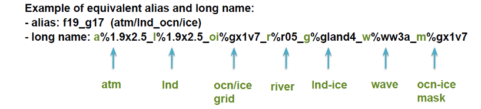
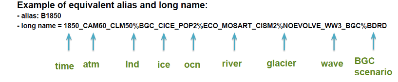

Create New Case#
The tool that generates a new case is create_newcase. This tool is located in the $SRCROOT directory under the cime/scripts directory.

Figure: Detailed view of the location of create_newcase
After running create_newcase a $CASEROOT directory is created.
Command Syntax#
Go to the cime/scripts directory in the CESM code
cd /glade/work/$USER/code/my_cesm_code/cime/scripts/
Example of basic ./create_newcase syntax:
./create_newcase --case /glade/work/$USER/cases/CASE --res RES --compset COMPSET
NOTE: Do not enter the example above at the command line. You will create your first case in the Exercise at the end of this section.
Click here for example output
Compset longname is 1850_CAM60_CLM50%BGC-CROP_CICE_POP2%ECO%ABIO-DIC_MOSART_CISM2%NOEVOLVE_WW3_BGC%BDRD
Compset specification file is /glade/work/$USER/code/cesm2.1.1/cime/../cime_config/config_compsets.xml
Compset forcing is 1850
Com forcing is Biogeochemistry intercomponent with diagnostic CO2
ATM component is CAM cam6 physics:
LND component is clm5.0:BGC (vert. resol. CN and methane) with prognostic crop:
ICE component is Sea ICE (cice) model version 5
OCN component is POP2 EcosystemAbiotic DIC/DIC14
ROF component is MOSART: MOdel for Scale Adaptive River Transport
GLC component is cism2 (default, higher-order, can run in parallel):cism ice evolution turned off (this is the standard configuration unless you're explicitly interested in ice evolution):
WAV component is Wave Watch
ESP component is
Pes specification file is /glade/work/$USER/code/cesm2.1.1/cime/../cime_config/config_pes.xml
Compset specific settings: name is RUN_STARTDATE and value is 0001-01-01
Compset specific settings: name is RUN_REFDATE and value is 0301-01-01
Compset specific settings: name is RUN_TYPE and value is hybrid
Compset specific settings: name is RUN_REFCASE and value is b.e20.B1850.f19_g17.release_cesm2_1_0.020
Compset specific settings: name is CLM_NAMELIST_OPTS and value is use_init_interp=.true.
Machine is cheyenne
Pes setting: grid match is a%1.9x2.5.+l%1.9x2.5.+oi%gx1
Pes setting: machine match is cheyenne
Pes setting: compset_match is CAM.+CLM.+CICE.+POP.+
Pes setting: grid is a%1.9x2.5_l%1.9x2.5_oi%gx1v7_r%r05_g%gland4_w%ww3a_m%gx1v7
Pes setting: compset is 1850_CAM60_CLM50%BGC-CROP_CICE_POP2%ECO%ABIO-DIC_MOSART_CISM2%NOEVOLVE_WW3_BGC%BDRD
Pes setting: tasks is {'NTASKS_ATM': 288, 'NTASKS_ICE': 108, 'NTASKS_CPL': 288, 'NTASKS_LND': 144, 'NTASKS_WAV': 36, 'NTASKS_ROF': 40, 'NTASKS_OCN': 288, 'NTASKS_GLC': 36}
Pes setting: threads is {'NTHRDS_ICE': 1, 'NTHRDS_ATM': 1, 'NTHRDS_ROF': 1, 'NTHRDS_LND': 1, 'NTHRDS_WAV': 1, 'NTHRDS_OCN': 1, 'NTHRDS_CPL': 1, 'NTHRDS_GLC': 1}
Pes setting: rootpe is {'ROOTPE_OCN': 288, 'ROOTPE_LND': 0, 'ROOTPE_ATM': 0, 'ROOTPE_ICE': 144, 'ROOTPE_WAV': 252, 'ROOTPE_CPL': 0, 'ROOTPE_ROF': 0, 'ROOTPE_GLC': 0}
Pes setting: pstrid is {}
Pes other settings: {}
Pes comments: about 12ypd expected
Compset is: 1850_CAM60_CLM50%BGC-CROP_CICE_POP2%ECO%ABIO-DIC_MOSART_CISM2%NOEVOLVE_WW3_BGC%BDRD
Grid is: a%1.9x2.5_l%1.9x2.5_oi%gx1v7_r%r05_g%gland4_w%ww3a_m%gx1v7
Components in compset are: ['cam', 'clm', 'cice', 'pop', 'mosart', 'cism', 'ww3', 'sesp', 'drv', 'dart']
This is a CESM scientifically supported compset at this resolution.
Using project from .cesm_proj: P93300641
No charge_account info available, using value from PROJECT
Using project from .cime/config: P93300641
cesm model version found: cesm2.1_tutorial2022
Batch_system_type is pbs
job is case.run USER_REQUESTED_WALLTIME None USER_REQUESTED_QUEUE None WALLTIME_FORMAT %H:%M:%S
job is case.st_archive USER_REQUESTED_WALLTIME None USER_REQUESTED_QUEUE None WALLTIME_FORMAT %H:%M:%S
Creating Case directory /glade/work/$USER/cases/b.day1.0
Notes:
For all user scripts you can run the script name followed by the
--hor--helpargument to see help documentation for that script and a list of all command line arguments for that script.Double dashes
--are required with command line arguments
Command Arguments#

Casename#
--case is the argument that specifies the name and location of the case being created. In the example above, the casename is CASE and the location of the case is /glade/work/$USER/cases/. Note that if a path preceding the casename is not specified, then the case is created as a subdirectory of the $CIMEROOT/scripts directory.
The path
/glade/work/$USER/cases/CASEis your workspaceCASEROOT, as described in the workspaces section.
In this tutorial we will use fairly simple names for the cases you create, build, and run. However, most CESM experiments have much longer casenames that provide information about the experiment at a glance. Knowing the CESM case naming conventions will help you navigate CESM community experiments. Information about the CESM naming is available at:
Resolution#
--res is the argument that specifies the model resolution or grid. In the example above, the resolution is RES. Each model resolution can be specified with the --res argument by its alias or its full long name. However, the long name conventions are generally quite lengthy, so it is useful if you become familiar with using the alias version. Because the atmosphere and land share a grid and the ocean and sea ice share a grid only two grids are specified by the alias using the following format: atm/lnd_ocn/ice.

CESM2 Supported Grid Definitions#
Link for CESM Supported Grids:
http://www.cesm.ucar.edu/models/cesm2/config/grids.html
CIMEROOT/scripts/query_config --grids --long
Click here for example output
=========================================
GRID naming convention
=========================================
The notation for the grid longname is
a%name_l%name_oi%name_r%name_m%mask_g%name_w%name
where
a% => atm, l% => lnd, oi% => ocn/ice, r% => river, m% => mask, g% => glc, w% => wav
Supported out of the box grid configurations are given via alias specification in
the file "config_grids.xml". Each grid alias can also be associated with the
following optional attributes
compset (Regular expression for compset matches that are required for this grid)
not_compset (Regular expression for compset matches that are not permitted this grid)
Using the alias and the optional "compset" and "not_compset" attributes a grid longname is created
Note that the mask is for information only - and is not an attribute of the grid
By default, if the mask is not specified below, it will be set to the ocnice grid
And if there is no ocnice grid (such as for single column, the mask is null since it does not mean anything)
-------------------------------------------------------------
default component grids:
component compset value
-------------------------------------------------------------
atm SATM null
lnd SLND null
ocnice SOCN null
rof SROF null
rof DWAV rx1
rof RTM r05
rof MOSART r05
rof DROF rx1
rof DROF%CPLHIST r05
rof XROF r05
glc SGLC null
glc CISM1 gland5UM
glc CISM2 gland4
glc XGLC gland4
wav SWAV null
wav DWAV ww3a
wav WW3 ww3a
wav XWAV ww3a
-------------------------------------------------------------
alias: g16_g16 (only for compsets that are DATM.+DROF )
non-default grids are: atm:gx1v6 lnd:gx1v6 ocnice:gx1v6
gx1v6 is displaced Greenland pole v6 1-deg grid: with domain file(s):
$DIN_LOC_ROOT/share/domains/domain.ocn.gx1v6.090206.nc (only for grid match: atm|lnd)
$DIN_LOC_ROOT/share/domains/domain.ocn.gx1v6.090206.nc (only for grid match: ocnice)
alias: g17_g17 (only for compsets that are DATM.+DROF )
non-default grids are: atm:gx1v7 lnd:gx1v7 ocnice:gx1v7
gx1v7 is displaced Greenland pole 1-deg grid with Caspian as a land feature: with domain file(s):
$DIN_LOC_ROOT/share/domains/domain.ocn.gx1v7.151008.nc (only for grid match: atm|lnd)
$DIN_LOC_ROOT/share/domains/domain.ocn.gx1v7.151008.nc (only for grid match: ocnice)
...
Compset#
--compset is the argument that specifies the component set. In the example above, the compset is COMPSET. The compset specifies the component models and if they are active or not, forcing scenarios, and physics options for the models. As above, the --compset can be specified by its alias or its full long name. However, the long name conventions are generally quite lengthy, so it is useful if you become familiar with using the alias version.

Note:
Compsets are defined by different model components (active or data) and cime.
Some compsets are scientifically supported and/or tested, while some are only defined. The CESM project will not provide comprehensive support for compsets that are only defined.
Compsets determine which grid is required.
CESM2 Supported Compsets#
Link for CESM2 Supported Compsets:
http://www.cesm.ucar.edu/models/cesm2/config/compsets.html
CIMEROOT/scripts/query_config --compsets
Click here for example output
Active component: allactive
--------------------------------------
Compset Alias: Compset Long Name
--------------------------------------
B1850 : 1850_CAM60_CLM50%BGC-CROP_CICE_POP2%ECO%ABIO-DIC_MOSART_CISM2%NOEVOLVE_WW3_BGC%BDRD
B1850cmip6 : 1850_CAM60_CLM50%BGC-CROP-CMIP6DECK_CICE%CMIP6_POP2%ECO%ABIO-DIC_MOSART_CISM2%NOEVOLVE_WW3_BGC%BDRD
BMH6kcmip6 : midH_CAM60_CLM50%BGC_CICE_POP2%ECO%ABIO-DIC_MOSART_CISM2%NOEVOLVE_WW3_BGC%BDRD
BLIG127kcmip6 : 127ka_CAM60_CLM50%BGC_CICE%CMIP6_POP2%ECO%ABIO-DIC_MOSART_CISM2%NOEVOLVE_WW3_BGC%BDRD
BCO2x4cmip6 : 1850_CAM60%4xCO2_CLM50%BGC-CROP-CMIP6DECK_CICE%CMIP6_POP2%ECO%ABIO-DIC_MOSART_CISM2%NOEVOLVE_WW3_BGC%BDRD
B1PCTcmip6 : 1850_CAM60%1PCT_CLM50%BGC-CROP-CMIP6DECK_CICE%CMIP6_POP2%ECO%ABIO-DIC_MOSART_CISM2%NOEVOLVE_WW3_BGC%BDRD
BW1850 : 1850_CAM60%WCTS_CLM50%BGC-CROP_CICE_POP2%ECO%NDEP_MOSART_CISM2%NOEVOLVE_WW3
BW1850cmip6 : 1850_CAM60%WCTS_CLM50%BGC-CROP-CMIP6WACCMDECK_CICE%CMIP6_POP2%ECO%NDEP_MOSART_CISM2%NOEVOLVE_WW3
BWsc1850 : 1850_CAM60%WCSC_CLM50%BGC-CROP_CICE_POP2%ECO_MOSART_CISM2%NOEVOLVE_WW3
BWsc1850smyle : 1850_CAM60%WCSC%SMYLE_CLM50%BGC-CROP_CICE_POP2%ECO%ABIO-DIC_MOSART_CISM2%NOEVOLVE_WW3_BGC%BDRD
BWscHIST : HIST_CAM60%WCSC_CLM50%BGC-CROP_CICE_POP2%ECO_MOSART_CISM2%NOEVOLVE_WW3
BWCO2x4cmip6 : 1850_CAM60%WCTS%4xCO2_CLM50%BGC-CROP-CMIP6WACCMDECK_CICE%CMIP6_POP2%ECO%NDEP_MOSART_CISM2%NOEVOLVE_WW3
BW1PCTcmip6 : 1850_CAM60%WCTS%1PCT_CLM50%BGC-CROP-CMIP6WACCMDECK_CICE%CMIP6_POP2%ECO%NDEP_MOSART_CISM2%NOEVOLVE_WW3
BWmaCO2x4cmip6 : 1850_CAM60%WCCM%4xCO2_CLM50%BGC-CROP-CMIP6WACCMDECK_CICE%CMIP6_POP2%ECO%NDEP_MOSART_CISM2%NOEVOLVE_WW3
BWma1PCTcmip6 : 1850_CAM60%WCCM%1PCT_CLM50%BGC-CROP-CMIP6WACCMDECK_CICE%CMIP6_POP2%ECO%NDEP_MOSART_CISM2%NOEVOLVE_WW3
BWSSP126cmip6 : SSP126_CAM60%WCTS_CLM50%BGC-CROP-CMIP6WACCMDECK_CICE%CMIP6_POP2%ECO%NDEP_MOSART_CISM2%NOEVOLVE_WW3
BWSSP245cmip6 : SSP245_CAM60%WCTS_CLM50%BGC-CROP-CMIP6WACCMDECK_CICE%CMIP6_POP2%ECO%NDEP_MOSART_CISM2%NOEVOLVE_WW3
BWSSP370cmip6 : SSP370_CAM60%WCTS_CLM50%BGC-CROP-CMIP6WACCMDECK_CICE%CMIP6_POP2%ECO%NDEP_MOSART_CISM2%NOEVOLVE_WW3
BWSSP585cmip6 : SSP585_CAM60%WCTS_CLM50%BGC-CROP-CMIP6WACCMDECK_CICE%CMIP6_POP2%ECO%NDEP_MOSART_CISM2%NOEVOLVE_WW3
BWSSP534oscmip6 : SSP534_CAM60%WCTS_CLM50%BGC-CROP-CMIP6WACCMDECK_CICE%CMIP6_POP2%ECO%NDEP_MOSART_CISM2%NOEVOLVE_WW3
BWSSP126 : SSP126_CAM60%WCTS_CLM50%BGC-CROP_CICE_POP2%ECO%NDEP_MOSART_CISM2%NOEVOLVE_WW3
BWSSP245 : SSP245_CAM60%WCTS_CLM50%BGC-CROP_CICE_POP2%ECO%NDEP_MOSART_CISM2%NOEVOLVE_WW3
BWSSP370 : SSP370_CAM60%WCTS_CLM50%BGC-CROP_CICE_POP2%ECO%NDEP_MOSART_CISM2%NOEVOLVE_WW3
BWSSP585 : SSP585_CAM60%WCTS_CLM50%BGC-CROP_CICE_POP2%ECO%NDEP_MOSART_CISM2%NOEVOLVE_WW3
BWSSP534os : SSP534_CAM60%WCTS_CLM50%BGC-CROP_CICE_POP2%ECO%NDEP_MOSART_CISM2%NOEVOLVE_WW3
BWHIST : HIST_CAM60%WCTS_CLM50%BGC-CROP_CICE_POP2%ECO%NDEP_MOSART_CISM2%NOEVOLVE_WW3
BWSSP585extcmip6 : SSP585EXT_CAM60%WCTS_CLM50%BGC-CROP-CMIP6WACCMDECK_CICE%CMIP6_POP2%ECO%NDEP_MOSART_CISM2%NOEVOLVE_WW3
BWSSP534osextcmip6 : SSP534EXT_CAM60%WCTS_CLM50%BGC-CROP-CMIP6WACCMDECK_CICE%CMIP6_POP2%ECO%NDEP_MOSART_CISM2%NOEVOLVE_WW3
BWHISTcmip6 : HIST_CAM60%WCTS_CLM50%BGC-CROP-CMIP6WACCMDECK_CICE%CMIP6_POP2%ECO%NDEP_MOSART_CISM2%NOEVOLVE_WW3
BWma1850 : 1850_CAM60%WCCM_CLM50%BGC-CROP_CICE_POP2%ECO%NDEP_MOSART_CISM2%NOEVOLVE_WW3
BWmaHIST : HIST_CAM60%WCCM_CLM50%BGC-CROP_CICE_POP2%ECO%NDEP_MOSART_CISM2%NOEVOLVE_WW3
BHIST : HIST_CAM60_CLM50%BGC-CROP_CICE_POP2%ECO%ABIO-DIC_MOSART_CISM2%NOEVOLVE_WW3_BGC%BDRD
BHISTcmip6 : HIST_CAM60_CLM50%BGC-CROP-CMIP6DECK_CICE%CMIP6_POP2%ECO%ABIO-DIC_MOSART_CISM2%NOEVOLVE_WW3_BGC%BDRD
BHISTsmbb : HIST_CAM60%SMBB_CLM50%BGC-CROP-CMIP6DECK_CICE%CMIP6_POP2%ECO%ABIO-DIC_MOSART_CISM2%NOEVOLVE_WW3_BGC%BDRD
BSSP370smbb : SSP370_CAM60%SMBB_CLM50%BGC-CROP-CMIP6DECK_CICE%CMIP6_POP2%ECO%ABIO-DIC_MOSART_CISM2%NOEVOLVE_WW3_BGC%BDRD
BSSP370smbbext : SSP370EXT_CAM60%SMBB_CLM50%BGC-CROP-CMIP6DECK_CICE%CMIP6_POP2%ECO%ABIO-DIC_MOSART_CISM2%NOEVOLVE_WW3_BGC%BDRD
BSSP245smbb : SSP245_CAM60%SMBB_CLM50%BGC-CROP-CMIP6DECK_CICE%CMIP6_POP2%ECO%ABIO-DIC_MOSART_CISM2%NOEVOLVE_WW3_BGC%BDRD
BC5L45BGC : 2000_CAM50_CLM45%BGC_CICE_POP2_MOSART_SGLC_SWAV
B1850L45BGCR : 1850_CAM60_CLM45%BGC_CICE_POP2_RTM_SGLC_SWAV
B1850C5L45BGC : 1850_CAM50_CLM45%BGC_CICE_POP2_MOSART_SGLC_SWAV
BSSP585 : SSP585_CAM60_CLM50%BGC-CROP_CICE_POP2%ECO%ABIO-DIC_MOSART_CISM2%NOEVOLVE_WW3_BGC%BDRD
BSSP126 : SSP126_CAM60_CLM50%BGC-CROP_CICE_POP2%ECO%ABIO-DIC_MOSART_CISM2%NOEVOLVE_WW3_BGC%BDRD
BSSP245 : SSP245_CAM60_CLM50%BGC-CROP_CICE_POP2%ECO%ABIO-DIC_MOSART_CISM2%NOEVOLVE_WW3_BGC%BDRD
BSSP370 : SSP370_CAM60_CLM50%BGC-CROP_CICE_POP2%ECO%ABIO-DIC_MOSART_CISM2%NOEVOLVE_WW3_BGC%BDRD
BSSP585cmip6 : SSP585_CAM60_CLM50%BGC-CROP-CMIP6DECK_CICE%CMIP6_POP2%ECO%ABIO-DIC_MOSART_CISM2%NOEVOLVE_WW3_BGC%BDRD
...
Machines#
The argument --mach is not required on CESM supported machines, but is required on other machines